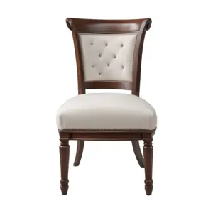
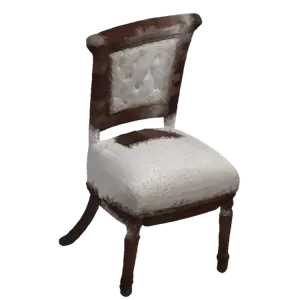
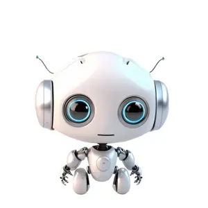
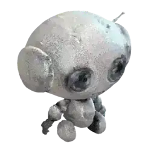

免費本機
Hunyuan3D-2 mini
騰訊開源 AI。形狀清晰、細節多，顏色直接由你張相投射上去。
- 速度
- 大約 10–30 秒
- 收費
- 免費
- 需要
- NVIDIA 顯示卡
SketchUp 擴充功能。揀一張物件相，AI 幫你整出有顏色嘅 3D 模型，直接放入你嘅 SketchUp 檔案。兩個引擎免費喺你部電腦運行，一個雲端引擎出最似相嘅效果。


以下模型由免費本機引擎整出，顏色取自原本張相。每個模型大約 2 萬個面，可以喺 SketchUp 隨便轉嚟睇。
木櫈 · 椅背、坐墊同四隻腳都分得好清楚


機械人公仔 · 背面係 AI 估出嚟，顏色跟最近嘅部分
本機引擎完全離線，相片唔會離開你部電腦。想要最好效果，就用雲端嘅 Meshy。
騰訊開源 AI。形狀清晰、細節多，顏色直接由你張相投射上去。
最快嘅引擎。形狀圓滑啲，AI 會估埋背面嘅顏色。冇顯示卡都用得，只係慢啲。
細節最多、表面最平滑，仲有真實相片貼圖。用你自己嘅 Meshy API key。
擴充功能好細，但 AI 要第一次用嗰陣先下載（大約 11 GB）。
撳上面個掣，下載 PhotoTo3D.rbz。
SketchUp → Extensions → Extension Manager → Install Extension，揀個 .rbz。
撳工具列「相片變3D」，再撳「安裝 AI」。會自動裝晒，需時 20–40 分鐘。
裝完撳「再檢查」，揀相，撳「開始變 3D」，模型就會出現喺原點。
安裝 AI 會下載 Python 3.11、PyTorch 同 AI 模型，全部放喺 %LOCALAPPDATA%\PhotoTo3D。
每張相淨係影一件嘢，例如櫈、花樽、公仔、鞋。成件嘢要入晒鏡，背景簡單、光線充足，由斜上少少嘅角度影。成座建築物或者房間，就用 SketchUp 嘅 Match Photo。
唔會。Hunyuan3D-2 同 TripoSR 完全喺你部電腦運行。只有揀 Meshy 嗰陣，相片先會上載去 Meshy 伺服器。
喺 meshy.ai 開戶口，升級付費計劃，然後喺 API 設定頁建立 key。貼入相片變3D 視窗就用得，可以揀記住喺呢部電腦。
AI 部分已經喺 RTX 3060 測試過，SketchUp 入面嘅視窗仲喺測試緊。有問題可以撳視窗嘅「睇記錄」，每次都有詳細記錄。
TripoSR 係 MIT 授權。Hunyuan3D-2 mini 跟騰訊社群授權，可以免費用，但唔可以喺歐盟、英國同南韓使用；每月用戶超過 100 萬嘅公司要另外申請。Meshy 跟佢嘅服務條款。
免費下載，兩個本機引擎永久免費。